Working Stage Identification of Excavators Based on Control Signals of Operating Handles
Yupeng Shi, Yimin Xia, Lianglin Luo, Zhihong Xiong, Chengyu Wang, Laikuang Lin · Automation in Construction 130 (2021) 103873
한줄 요약 — 유압 반응 뒤의 실린더·압력 대신 운전자의 원명령인 네 핸들 PWM을 100 Hz로 취득하고, 각 채널 한 PWM 주기를 합친 66차원 창을 LSTM에 넣어 굴착·운반·하역·선회를 분류했다. 시험 정확도는 93.21%, 평균 F1은 0.92였고 압력 기반 대비 지연 오인식을 크게 줄였지만 Cat 320 한 기종·15사이클 자료에 한정된다.
1.연구 배경 및 동기
유압 응답보다 먼저 나타나는 조작명령으로 작업단계를 식별
굴삭기의 굴착·운반·하역·선회 단계를 정확히 구분하면 단계별 소요시간, 생산성, 연료소비와 운전패턴을 계산할 수 있다. 그러나 영상은 가림과 조명에 영향을 받고, 실린더 변위나 펌프압력처럼 동작 결과를 측정하는 신호는 운전자 명령보다 늦게 반응한다. 단계가 바뀐 뒤에도 이전 단계의 유압응답이 남으면 에너지 제어가 뒤늦게 전환될 수 있다.
유압 굴삭기의 동력은 엔진, 펌프, 파일럿 회로, 메인 스풀과 액추에이터를 거쳐 전달되므로 각 요소의 관성과 유체압축성 때문에 지연이 생긴다. 반면 조작핸들의 전기제어 신호는 운전자의 원명령이며 유압출력보다 앞서 측정할 수 있다. 논문은 버킷·암·붐·선회 핸들의 PWM 신호만으로 네 작업단계를 분류해 지연 오인식을 줄이는 방법을 제시한다.
분류기는 시간의존성을 학습하는 LSTM을 중심으로 구성하고 일반 RNN과 RBF-LIBSVM을 비교한다. 한 PWM 주기를 포함하도록 채널별 창 길이를 다르게 정한 뒤 네 신호를 이어 붙여 66차원 표본으로 만든다. 모델의 전체 정확도뿐 아니라 실제 단계전환보다 앞선 advanced, 이전 단계를 늦게 유지하는 lagging, 비인접 단계로 잘못 가는 cross-stage 오류를 분리한다.
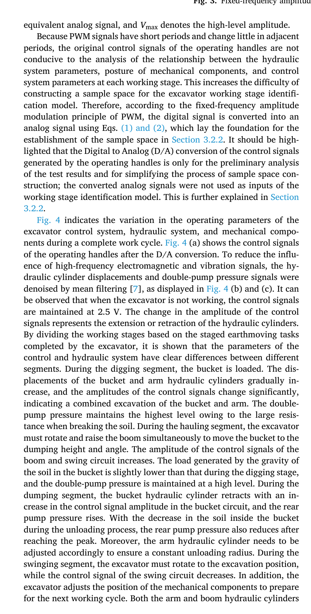
원문 Figure 4 · PDF p.6 — Fig. 4 indicates the variation in the operating parameters of the excavator control system, hydraulic system, and mechanical compo nents during a complete work cycle. Fig. 4 (a) shows the control signals of the operating handles after the D/A conversion. To reduce the influ ence of high-frequency electromagnetic and vibration signals, the hy draulic cylinder displacements and double-pump pressure signals were denoised by mean filtering [7], as displayed in Fig. 4 (b) and (c). It can be observed that when the excavator is not working, the control signals are maintained at 2.5 V. The change in the amplitude of the control signals represents the extension or retraction of the hydraulic cylinders. By dividing the working stages based on the staged earthmoving tasks completed by the excavator, it is shown that the parameters of the control and hydraulic system have clear differences between different segments. During the digging segment, the bucket is loaded. The dis placements of the bucket and arm hydraulic cylinders gradually in crease, and the amplitudes of the control signals change significantly, indicating a combined excavation of the bucket and arm. The double- pump pressure maintains the highest level owing to the large resis tance when breaking the soil. During the hauling segment, the excavator must rotate and raise the boom simultaneously to move the bucket to the dumping height and angle. The amplitude of the control signals of the boom and swing circuit increases. The load generated by the gravity of the soil in the bucket is slightly lower than that during the digging stage, and the double-pump pressure is maintained at a high level. During the dumping segment, the bucket hydraulic cylinder retracts with an in crease in the control signal amplitude in the bucket circuit, and the rear pump pressure rises. With the decrease in the soil inside the bucket during the unloading process, the rear pump pressure also reduces after reaching the peak. Moreover, the arm hydraulic cylinder needs to be adjusted accordingly to ensure a constant unloading radius. During the swinging segment, the excavator must rotate to the excavation position, while the control signal of the swing circuit decreases. In addition, the excavator adjusts the position of the mechanical components to prepare for the next working cycle. Both the arm and boom hydraulic cylinders
선행 연구의 한계
실린더 변위와 펌프압력은 동력전달계 뒤쪽의 응답신호라 운전자 명령과 작업단계 전환보다 늦게 변한다.
영상 기반 단계인식은 카메라 시야, 가림, 조명과 장비 외관에 영향을 받아 현장 설치조건에 민감하다.
단순 임계값이나 정적 분류기는 PWM 파형의 시간순서와 단계전환 구간을 충분히 표현하기 어렵다.
전체 정확도만 보고하면 단계전환을 너무 빨리 또는 늦게 인식하는 오류가 에너지 제어에 미치는 영향을 알기 어렵다.
이 연구의 기여
Cat 320 굴삭기의 네 조작핸들 PWM을 100 Hz로 직접 취득하는 저비용 작업단계 인식 절차를 구성했다.
채널별 PWM 주기 12·26·13·15 표본을 합친 66차원 슬라이딩 창과 LSTM 분류기를 설계했다.
LSTM, RNN, LIBSVM의 정확도·precision·recall·F1과 학습표본 크기 민감도를 동일 자료에서 비교했다.
advanced·lagging·cross-stage 오류를 분해하고 압력 기반 모델과 지연 오인식 비율을 비교해 제어신호의 선행성을 검증했다.
2.방법론 및 시스템 구성
시험 굴삭기의 버킷, 암, 붐과 선회 조작핸들에서 PWM 제어신호를 100 Hz로 수집한다. 분석용으로 PWM duty ratio를 전압으로 변환하지만 분류기에는 변환된 압력이나 실린더 응답이 아니라 원 PWM 표본을 사용한다. 신호는 -1에서 +1 범위로 정규화하고 각 시점의 작업단계 라벨을 굴착 1, 운반 2, 하역 3, 선회 4로 부여한다.
각 채널의 한 PWM 주기는 버킷 0.12초, 암 0.26초, 붐 0.13초, 선회 0.15초다. 0.01초 샘플 간격에서 각각 12·26·13·15개 값을 취해 연결하면 한 입력은 66차원이 된다. 이 시계열 창을 256-unit LSTM, 64·16-unit fully connected layer와 4-class 출력층에 통과시켜 현재 작업단계를 결정한다.
처리 파이프라인
1
다채널 PWM 취득
네 조작핸들의 제어신호를 NI 기반 수집장치로 100 Hz 동기측정한다. 실린더 변위와 두 펌프압력도 지연관계 분석을 위해 함께 기록한다.
2
주기 기반 슬라이딩 창
버킷 12, 암 26, 붐 13, 선회 15표본으로 각 채널의 한 PWM 주기를 포함하고 네 창을 이어 66개 입력특징을 만든다.
3
정규화와 라벨링
각 입력을 -1~+1로 정규화하고 운전 사이클의 굴착·운반·하역·선회 구간에 1~4 라벨을 지정한다.
4
LSTM 분류
256-unit LSTM의 은닉상태가 창 내부 파형의 시간관계를 인코딩하고 64·16-unit 완전연결층을 거쳐 네 단계 확률을 출력한다.
5
오류유형과 사이클 분석
시험표본의 confusion matrix와 단계별 지표를 계산하고 전환부 오류를 advanced, lagging, cross-stage로 구분한다. 예측 라벨 연속열에서 단계시간과 전체 사이클도 산출한다.
원문 수식과 의미
PWM duty ratio
D=\frac{T_{H0}}{T_{H0}+T_{L0}}
한 PWM 주기에서 high 구간과 low 구간으로 duty ratio를 정의한다. 논문은 이 값을 아날로그 전압으로 환산해 신호를 해석하지만 분류에는 원 PWM을 사용한다.
정확도
Accuracy=\frac{TP+TN}{TP+TN+FP+FN}
LSTM, RNN과 LIBSVM의 전체 분류성능을 비교하는 지표이며 단계별 precision, recall, F1도 함께 계산한다.
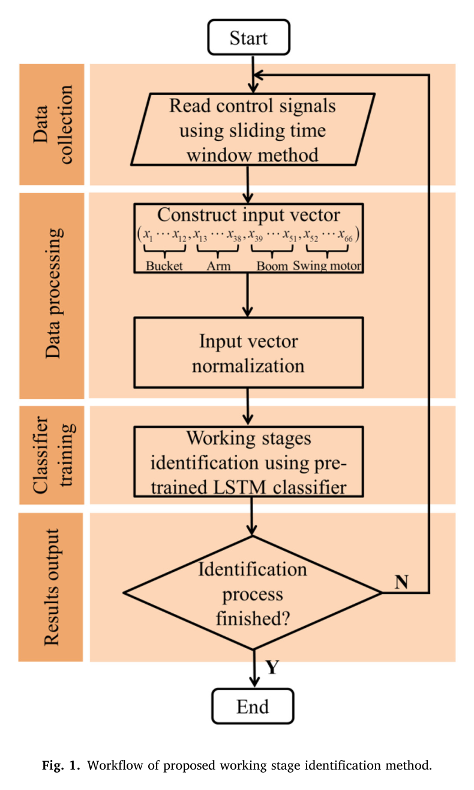
원문 Figure 1 · PDF p.4 — Fig. 1. Workflow of proposed working stage identification method.
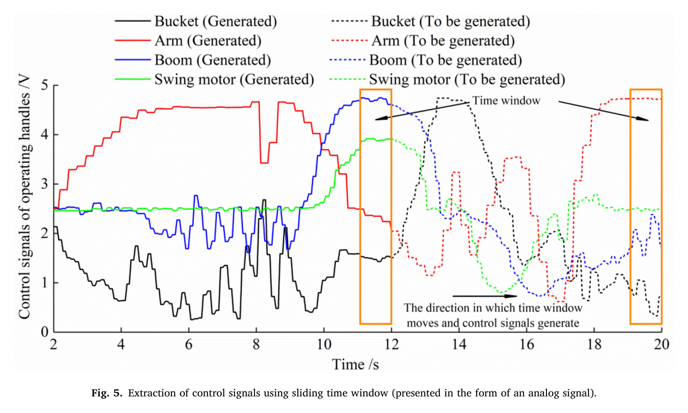
원문 Figure 5 · PDF p.8 — Fig. 5. Extraction of control signals using sliding time window (presented in the form of an analog signal).
3.핵심 기술
원명령 기반 선행 관측
핸들 제어신호는 운전자가 의도한 밸브 동작을 나타내며 실린더 이동과 펌프압력보다 먼저 변한다. 그림의 동기파형에서도 제어입력 변화 뒤에 액추에이터와 압력응답이 따라온다. 따라서 단계전환을 에너지 관리에 쓰려면 동작결과보다 이 원명령을 분류하는 것이 지연을 줄이는 데 유리하다.
버킷·암·붐·선회 네 채널만으로 네 작업단계를 구분한다.
이동모터 신호는 연속 토공 사이클의 종료와 재배치 판단에만 사용한다.
압력 기반 기준선과 비교해 lagging 오류 감소를 직접 평가한다.
가변길이 PWM 창의 66차원 융합
네 핸들의 PWM 주기가 서로 달라 동일한 표본 수를 적용하면 어떤 채널은 한 주기를 충분히 포함하지 못하거나 불필요하게 긴 지연을 만든다. 논문은 채널별 한 주기에 해당하는 표본 수를 취한 뒤 연결해 모든 파형의 duty와 전환정보를 보존하면서 입력지연을 제한한다.
버킷·암·붐·선회 창 길이는 각각 12·26·13·15표본이다.
총 입력길이는 66이며 각 창의 끝을 현재 시점에 맞춰 이동한다.
창을 1주기에서 4주기로 늘리면 정확도와 lagging 오류가 악화돼 1주기가 최적이었다.
LSTM 단계분류기
LSTM은 입력·망각·출력 gate와 cell state로 PWM 파형의 장단기 의존성을 보존한다. 256-unit recurrent layer 뒤에 두 완전연결층을 배치하고 Adam으로 50 epoch 학습한다. 일반 RNN보다 단계전환과 장기 의존성을 안정적으로 표현하며 정적 LIBSVM보다 높은 전체·단계별 성능을 보였다.
구조는 입력 66, LSTM 256, fully connected 64와 16, 출력 4다.
Adam learning rate는 1×10^-3, weight decay는 5×10^-4다.
RNN은 같은 비교자료를 사용하고 LIBSVM은 RBF kernel과 10-fold cross-validation으로 설정했다.
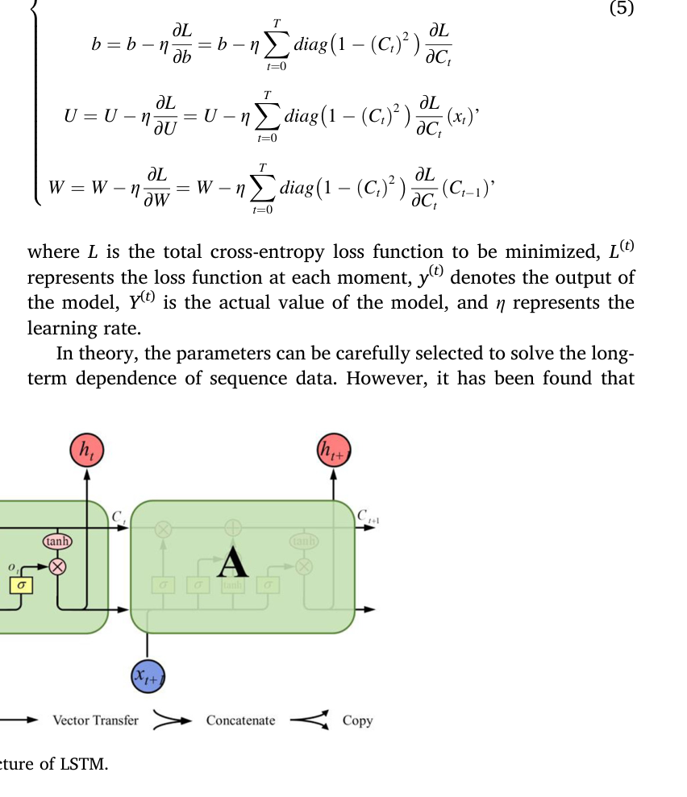
원문 Figure 6 · PDF p.8 — Fig. 6. Structure of LSTM.
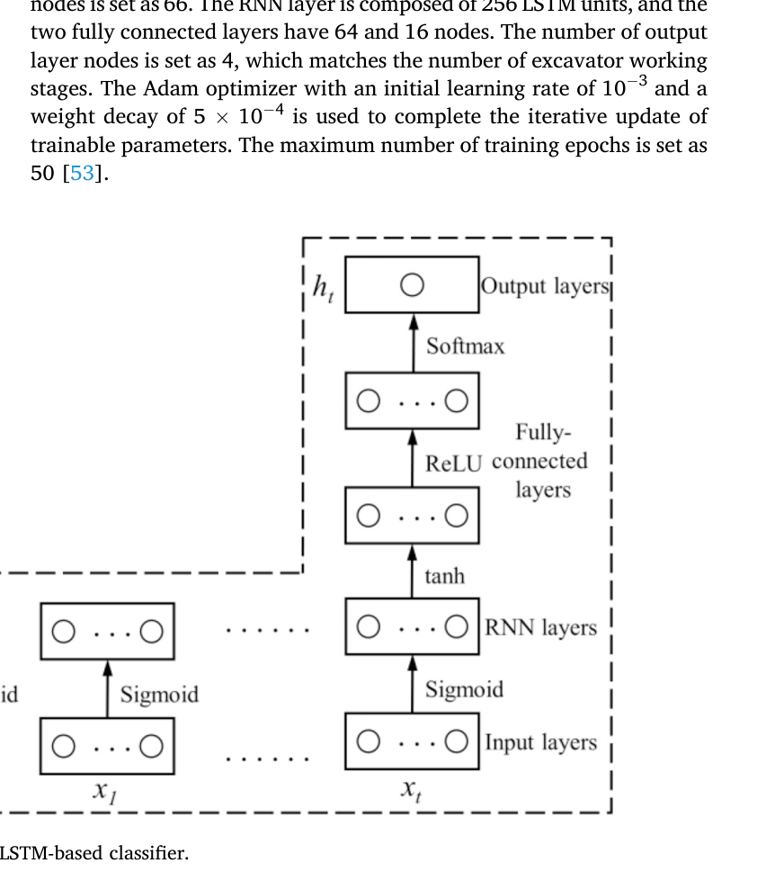
원문 Figure 7 · PDF p.9 — Fig. 7. Structure of LSTM-based classifier.
원문 Figure 2 · PDF p.5 — Fig. 2. The action diagram of the four segments in a complete working cycle: (a) Digging; (b) Hauling; (c) Dumping; (d) Swinging.
오류유형 분석에서 LSTM의 advanced 오류는 2.11%, lagging 오류는 4.68%였으며 cross-stage 오류는 발생하지 않았다. 압력 기반 모델의 전체 정확도는 82.17%, lagging 오류는 14.22%로 LSTM의 약 세 배였다. 운반 표본 1,224개 가운데 165개가 이전 굴착으로 인식돼 운반 단계 lagging 비율 13.48%가 LSTM 내부의 가장 큰 전환오류였다.
작업사이클 계수는 100% 정확했고 평균 사이클시간은 18.96초였다. 예측 단계시간의 상대오차는 굴착 6.26%, 운반 11.52%, 하역 3.81%, 선회 0%로 평균 5.40%였다. 창을 한 주기에서 네 주기로 늘리면 정확도가 93.21%에서 91.71%로 떨어지고 네 주기 lagging 오류가 6.15%까지 증가해 가장 짧은 한 주기 창이 선택됐다.
정량 결과
평가 항목
정량 결과
조건·맥락
원문 근거
전체 분류 정확도
LSTM 93.21%; RNN 90.85%; LIBSVM 88.91%
5,689개 시험표본의 네 작업단계 분류
PDF p.10
LSTM 평균 단계성능
precision 0.93; recall 0.91; F1 0.92
굴착·운반·하역·선회 단계 평균
PDF p.11
LSTM 전환오류
advanced 2.11%; lagging 4.68%; cross-stage 0%
단계전환부 오인식 유형별 비율
PDF p.12
압력 기반 모델
accuracy 82.17%; lagging 14.22%
유압응답 신호를 이용한 비교모델
PDF p.13
운반단계 지연오류
165/1224 = 13.48%
실제 운반 표본을 이전 굴착단계로 잘못 인식한 LSTM 사례
PDF p.13
단계시간 평균오차
5.40%
굴착 6.26%, 운반 11.52%, 하역 3.81%, 선회 0%
PDF p.13
사이클 분석
계수 정확도 100%; 평균 18.96 s
연속 예측 라벨에서 완전 작업사이클을 산출
PDF p.12
창 길이 민감도
accuracy 93.21% → 91.71%; 4주기 lagging 6.15%
슬라이딩 창을 1 PWM 주기에서 4주기로 증가
PDF p.12
실패 사례와 경계조건
하역 말기의 버킷·암 신호가 다음 선회동작과 비슷해 13.5~13.8초 구간을 실제 전환보다 일찍 선회로 판단하는 advanced 오류가 나타났다.
운반이 9.4초에 시작돼도 이전 PWM 표본이 창에 남아 약 9.8초까지 굴착으로 판단하는 lagging 오류가 발생했다.
운반단계는 1,224개 중 165개가 굴착으로 분류되어 recall 0.84로 네 단계 중 가장 낮았다.
창을 길게 하면 문맥은 늘지만 이전 단계 표본이 더 오래 남아 정확도가 하락하고 lagging 오류가 증가했다.
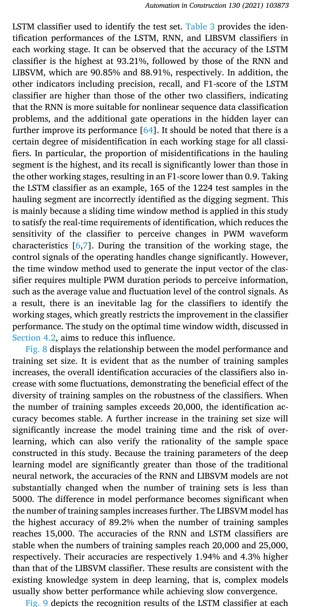
원문 Figure 8 · PDF p.10 — Fig. 8 displays the relationship between the model performance and training set size. It is evident that as the number of training samples increases, the overall identification accuracies of the classifiers also in crease with some fluctuations, demonstrating the beneficial effect of the diversity of training samples on the robustness of the classifiers. When the number of training samples exceeds 20,000, the identification ac curacy becomes stable. A further increase in the training set size will significantly increase the model training time and the risk of over- learning, which can also verify the rationality of the sample space constructed in this study. Because the training parameters of the deep learning model are significantly greater than those of the traditional neural network, the accuracies of the RNN and LIBSVM models are not substantially changed when the number of training sets is less than 5000. The difference in model performance becomes significant when the number of training samples increases further. The LIBSVM model has the highest accuracy of 89.2% when the number of training samples reaches 15,000. The accuracies of the RNN and LSTM classifiers are stable when the numbers of training samples reach 20,000 and 25,000, respectively. Their accuracies are respectively 1.94% and 4.3% higher than that of the LIBSVM classifier. These results are consistent with the existing knowledge system in deep learning, that is, complex models usually show better performance while achieving slow convergence.
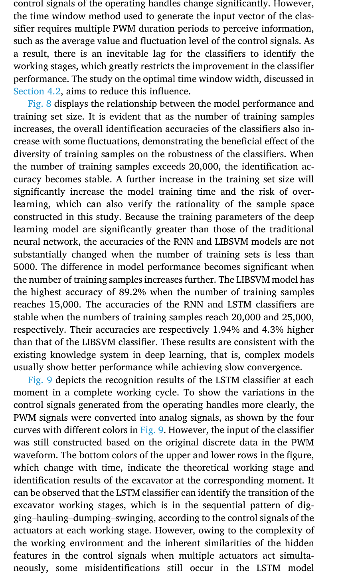
원문 Figure 9 · PDF p.10 — Fig. 9 depicts the recognition results of the LSTM classifier at each moment in a complete working cycle. To show the variations in the control signals generated from the operating handles more clearly, the PWM signals were converted into analog signals, as shown by the four curves with different colors in Fig. 9. However, the input of the classifier was still constructed based on the original discrete data in the PWM waveform. The bottom colors of the upper and lower rows in the figure, which change with time, indicate the theoretical working stage and identification results of the excavator at the corresponding moment. It can be observed that the LSTM classifier can identify the transition of the excavator working stages, which is in the sequential pattern of dig ging–hauling–dumping–swinging, according to the control signals of the actuators at each working stage. However, owing to the complexity of the working environment and the inherent similarities of the hidden features in the control signals when multiple actuators act simulta neously, some misidentifications still occur in the LSTM model
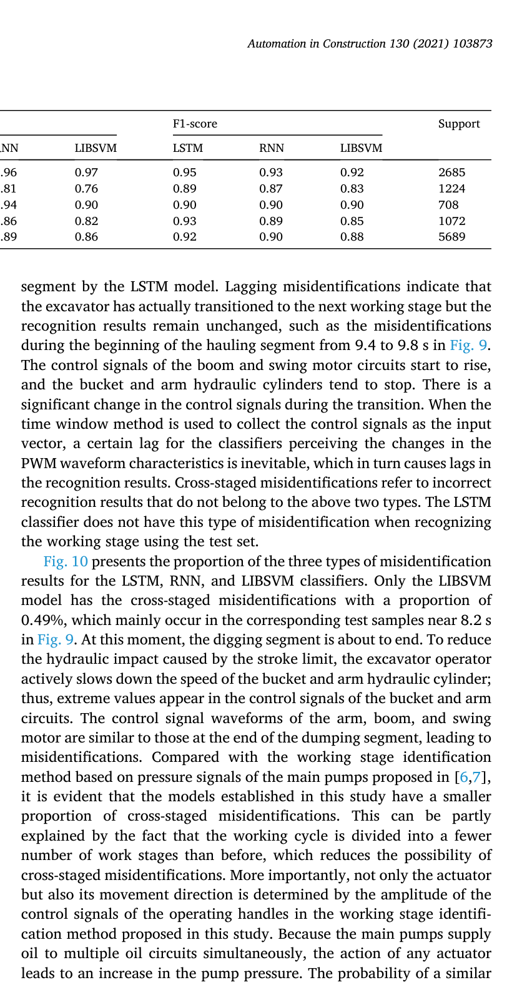
원문 Figure 10 · PDF p.11 — Fig. 10 presents the proportion of the three types of misidentification results for the LSTM, RNN, and LIBSVM classifiers. Only the LIBSVM model has the cross-staged misidentifications with a proportion of 0.49%, which mainly occur in the corresponding test samples near 8.2 s in Fig. 9. At this moment, the digging segment is about to end. To reduce the hydraulic impact caused by the stroke limit, the excavator operator actively slows down the speed of the bucket and arm hydraulic cylinder; thus, extreme values appear in the control signals of the bucket and arm circuits. The control signal waveforms of the arm, boom, and swing motor are similar to those at the end of the dumping segment, leading to misidentifications. Compared with the working stage identification method based on pressure signals of the main pumps proposed in [6,7], it is evident that the models established in this study have a smaller proportion of cross-staged misidentifications. This can be partly explained by the fact that the working cycle is divided into a fewer number of work stages than before, which reduces the possibility of cross-staged misidentifications. More importantly, not only the actuator but also its movement direction is determined by the amplitude of the control signals of the operating handles in the working stage identifi cation method proposed in this study. Because the main pumps supply oil to multiple oil circuits simultaneously, the action of any actuator leads to an increase in the pump pressure. The probability of a similar
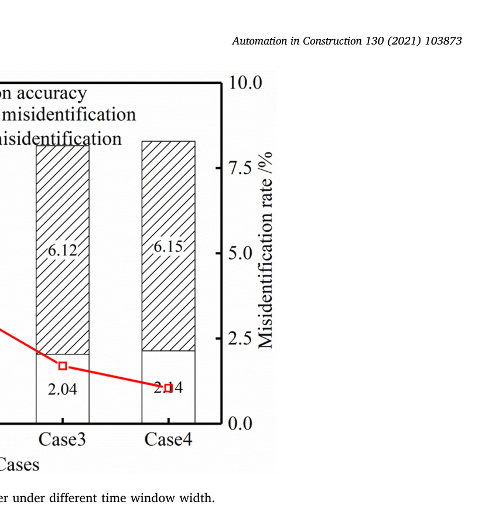
원문 Figure 11 · PDF p.13 — Fig. 11. The performance of classifier under different time window width.
5.한계 및 향후 연구
현재 한계
자료는 Cat 320 한 기종의 제어원리와 신호형식에 맞춰 수집돼 제조사·모델이 다른 굴삭기에 분류기를 바로 적용할 수 없다.
운전자 3명과 최소 15개 완전사이클의 제한된 시험으로 현장, 토질, 작업방법과 운전자 숙련도의 다양성을 충분히 포함하지 못했다.
단계 지속시간이 달라 표본 수가 불균형하며 가장 짧은 하역 단계는 다른 단계보다 학습자료가 적다.
연속적인 일반 토공 사이클을 대상으로 했으므로 주행, 대기, 장애물 회피, 비정상 조작과 복합작업은 분류대상에 포함하지 않았다.
향후 연구
다른 제조사·기종, 운전자, 토질과 작업조건의 데이터를 확대하고 data augmentation으로 일반화 성능을 검증해야 한다.
짧은 단계의 표본불균형을 모델구조, class weighting과 작업전문가의 사전지식으로 완화할 필요가 있다.
CAN bus에서 제어신호를 직접 읽어 별도 계측장치 없이 온라인 단계인식과 생산성 분석에 통합할 필요가 있다.
식별된 단계에 따라 엔진 운전점을 조정·안정화하는 에너지 절감제어를 구성하고 연료절감량과 작업성능을 실기로 평가해야 한다.
6.한마디로 정리
핵심 방법은?
네 조작핸들 PWM의 한 주기씩을 66차원 창으로 결합하고 256-unit LSTM으로 굴착·운반·하역·선회를 분류한다.
핵심 결과는?
시험 정확도 93.21%, 평균 F1 0.92를 얻었고 lagging 오류를 압력 기반 모델의 14.22%에서 4.68%로 줄였으며 사이클 계수는 100% 정확했다.
한계는?
Cat 320 한 기종, 운전자 3명과 15사이클에 한정되고 단계별 표본이 불균형해 다른 장비·현장으로의 일반화는 추가 검증이 필요하다.
필드로봇 운영대시보드에서는 이 분류결과를 단순 상태표시보다 생산성과 에너지 분석의 공통 시간축으로 사용할 수 있다. 각 단계의 시작·종료, 지속시간, 전환지연을 실시간 기록하면 사이클 수, 단계별 병목과 불필요한 대기·선회를 자동 계산할 수 있다.
제어신호가 유압응답보다 먼저 변한다는 결과는 단계별 엔진·펌프 운전점 전환에도 중요하다. 다만 모델의 확률이 낮거나 알려지지 않은 조작조합이 나타날 때 즉시 에너지 제어를 바꾸지 않도록 신뢰도 문턱과 안전한 기본모드를 두어야 한다. 또한 다른 기종에서는 신호 의미와 PWM 주기를 다시 식별해야 한다.
CAN 또는 제어기 로그에서 네 조작채널을 동기 취득하면 별도 카메라 없이 작업상태 타임라인을 만들 수 있다.
advanced·lagging·cross-stage 오류를 별도 KPI로 표시하면 제어 전환이 빠른지 늦은지를 전체 정확도와 분리해 진단할 수 있다.
단계별 지속시간과 실제 생산량·연료량을 결합하면 운전자와 작업조건별 에너지 원단위를 산출할 수 있다.
기종별 PWM 주기, 채널 부호와 동작매핑을 메타데이터로 관리하고 새 기종마다 재학습·검증 절차를 적용해야 한다.
7.전체 그림·표
본문 핵심 위치에 배치하지 않은 원문 Figure와 Table을 원문 페이지 순서로 수록한다.
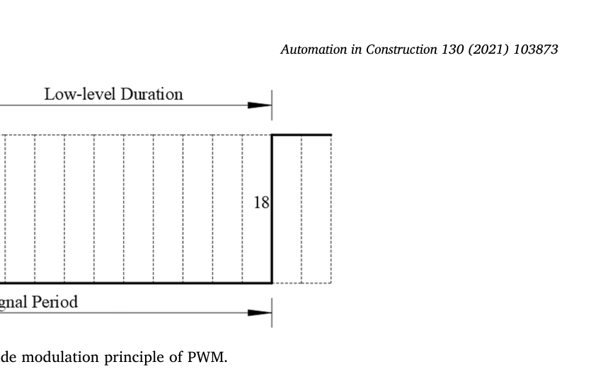
원문 Figure 3 · PDF p.6 — Fig. 3. Fixed-frequency amplitude modulation principle of PWM.
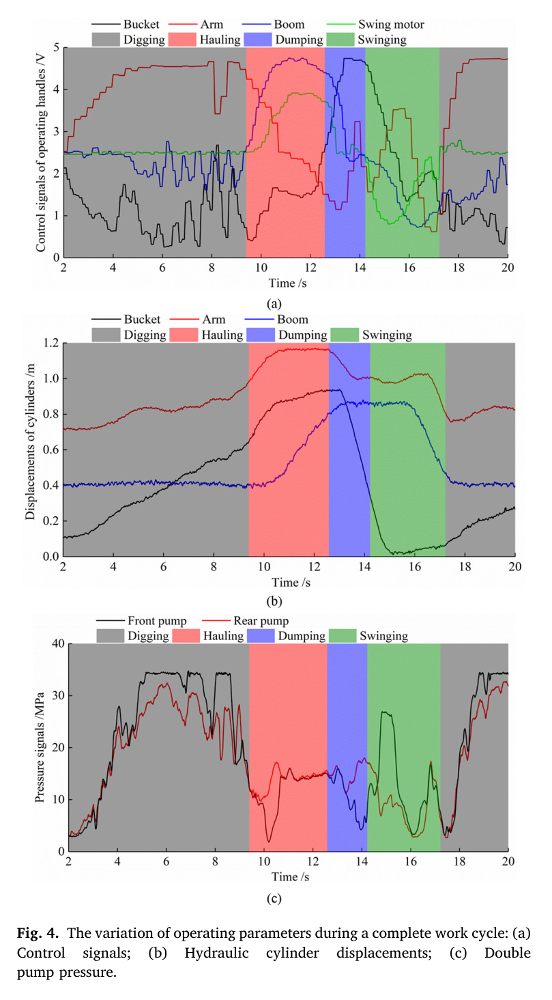
원문 Figure 4 · PDF p.6 — Fig. 4. The variation of operating parameters during a complete work cycle: (a) Control signals; (b) Hydraulic cylinder displacements; (c) Double pump pressure.
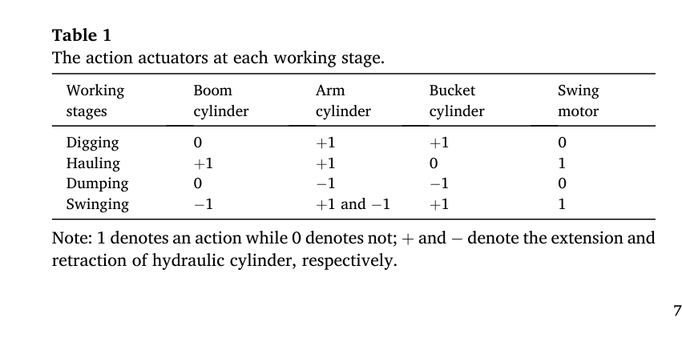
원문 Table 1 · PDF p.7 — Table 1 The action actuators at each working stage.
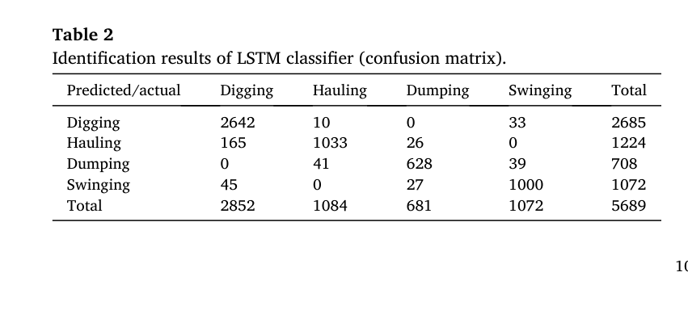
원문 Table 2 · PDF p.10 — Table 2 Identification results of LSTM classifier (confusion matrix).
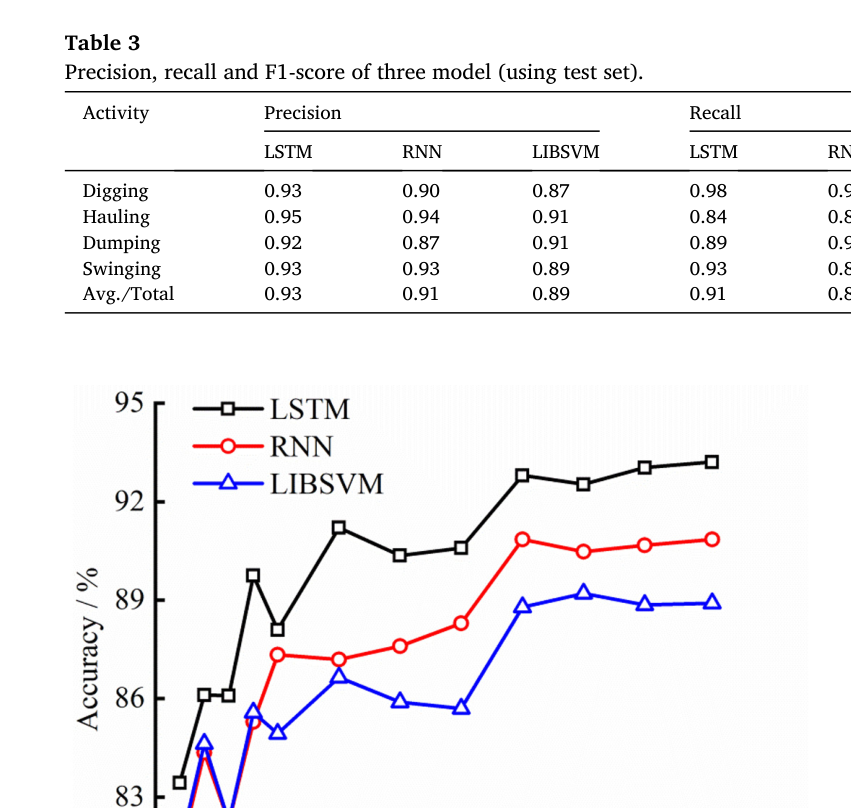
원문 Table 3 · PDF p.11 — Table 3 Precision, recall and F1-score of three model (using test set).
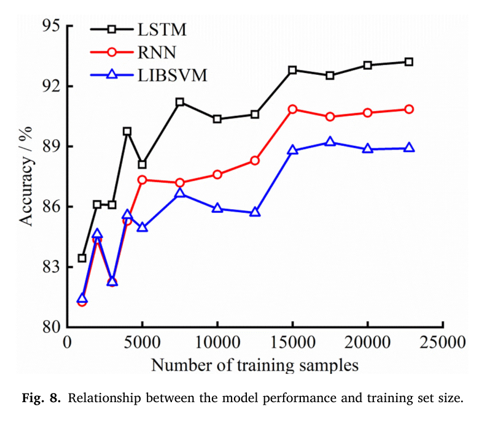
원문 Figure 8 · PDF p.11 — Fig. 8. Relationship between the model performance and training set size.
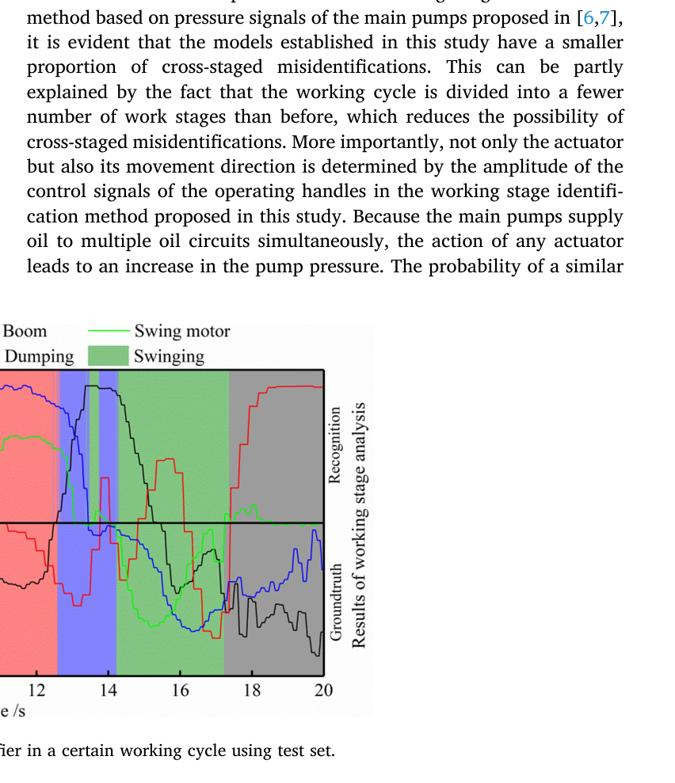
원문 Figure 9 · PDF p.11 — Fig. 9. Recognition results of LSTM classifier in a certain working cycle using test set.
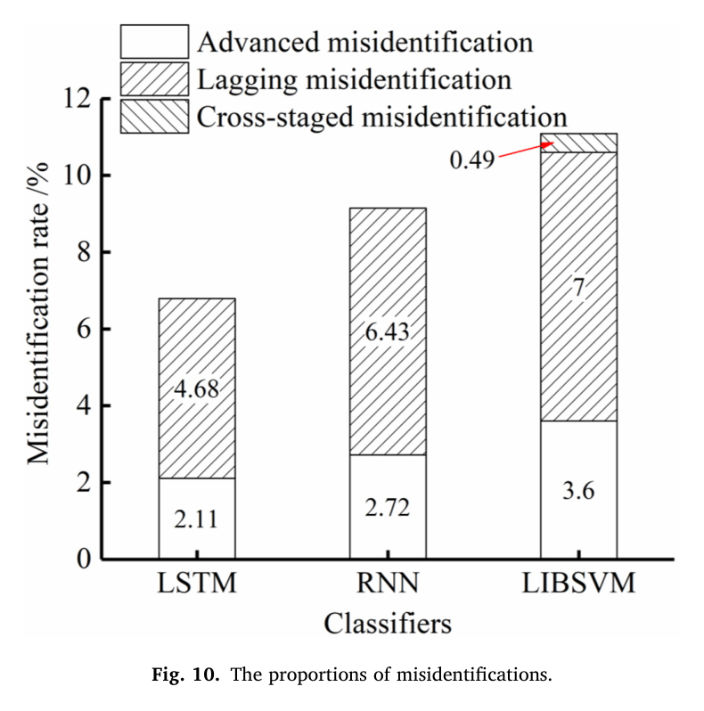
원문 Figure 10 · PDF p.12 — Fig. 10. The proportions of misidentifications.
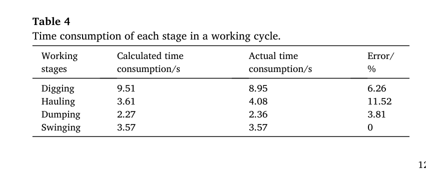
원문 Table 4 · PDF p.12 — Table 4 Time consumption of each stage in a working cycle.
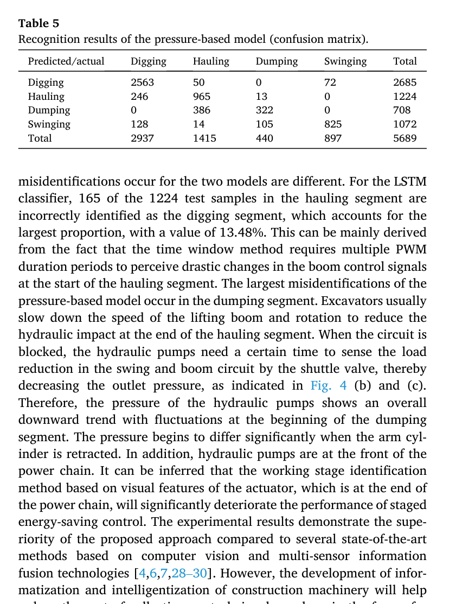
원문 Table 5 · PDF p.13 — Table 5 Recognition results of the pressure-based model (confusion matrix).
섹션별 원문 근거 페이지
배경: p.1, p.2, p.4
방법론: p.4, p.5, p.6, p.7, p.8, p.9
실험: p.4, p.5, p.7, p.9, p.10
결과: p.10, p.11, p.12, p.13
한계: p.13, p.14
원문·기존 요약·관련 자료
원문 PDFpdf
추출·교차검증 근거
Working stage identification of excavators based on control signals of operating handles.pdf